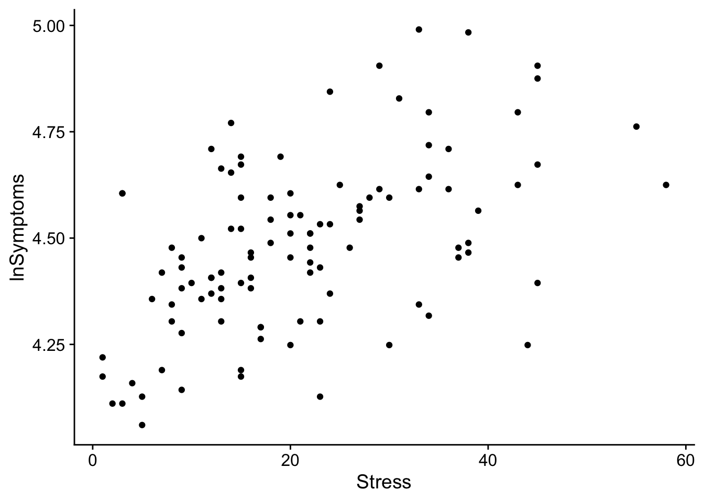
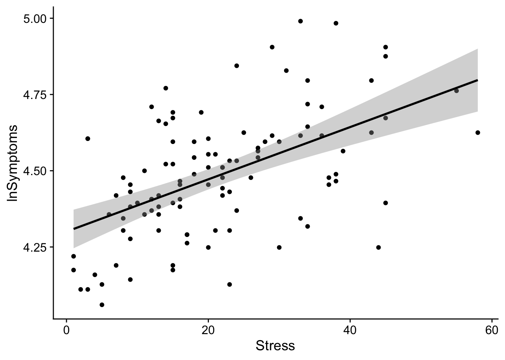
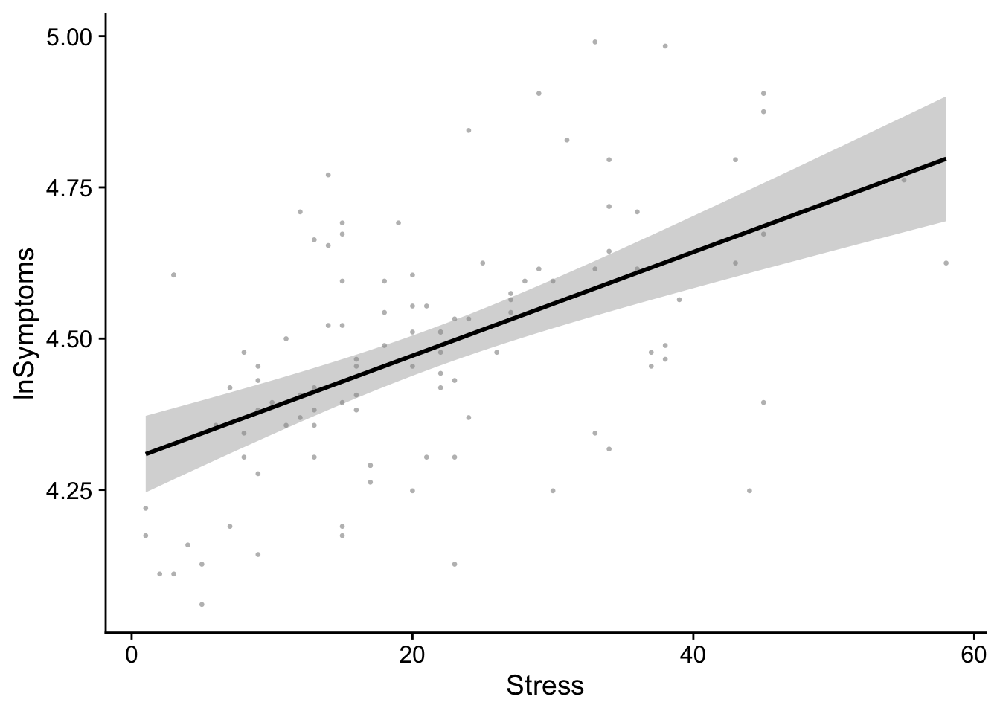
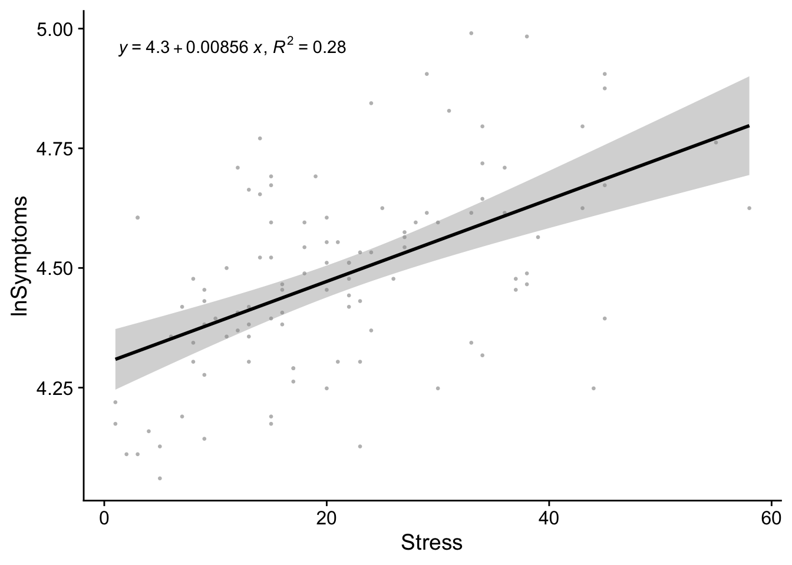
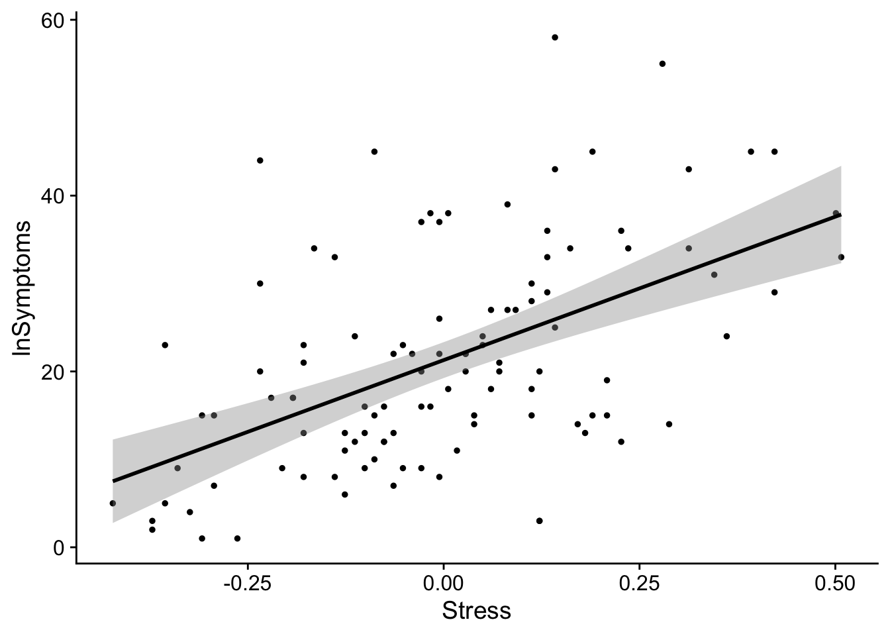

pacman::p_load(tidyverse, broom, plotly, cowplot)22 Plotting regression data
This walkthrough requires the following packages:
It’s useful practice to plot the regression data and line. In fact, I would typically recommend doing this at the outset of the analysis (way back at the beginning) but we had a few things to cover make this step clear.
22.1 Load in the data
First let’s reload our stress_data in case you’ve reset your environment:
stress_data <- read_table("https://www.uvm.edu/~statdhtx/methods8/DataFiles/Tab9-2.dat")
── Column specification ────────────────────────────────────────────────────────
cols(
ID = col_double(),
Stress = col_double(),
Symptoms = col_double(),
lnSymptoms = col_double()
)22.2 Create a simple scatter plot
And now to create a simple scatter plot of lnSymptoms as a function of Stress
# creating a new plot with our original scatter plot as a template:
scatter_plot <- ggplot(stress_data, aes(x = Stress, y = lnSymptoms)) +
geom_point() + # creates scatter plot
theme_cowplot() +
xlab("Stress") + ylab("lnSymptoms") +
theme_cowplot()
show(scatter_plot)
22.3 Add a regression line
From this scatterplot we can overlay a regression line as so
regression_plot <- scatter_plot +
# adding a regression line
geom_smooth(method=lm, level = 0.95, color="black", se = TRUE)
show(regression_plot)`geom_smooth()` using formula = 'y ~ x'
Teasing apart that last line: geom_smooth(method=lm, level = 0.95, color="black", se = TRUE)
To add a simple regression line to a scatter plot we can use the geom_smooth() function. geom_smooth() takes the following arguments:
-method: what kind of regression line do you want to create? in this case we are performing a linear regression, so lm.
-mapping: if you did not specify your aes() in the original call you need to specify them here (whats on the x-axis, y-axis, etc). Additionally if you are performing custom mappings this is the place.
-level: create a ribbon specifying a confidence interval of each predicted value (here I’m using 95% CI).
-se: do you want a shaded ribbon to be shown on the plot (TRUE of FALSE)
-color: what color do you want the line.
-linetype: solid line? dotted line? dashed line? default is solid.
Note that geom_smooth() is useful if one is doing very simple regression plots. If one has a more complicated model structure, then you may need to use the attributes of the model to create a data frame that works for you. I’ll coordinate with my analog for the Spring semester and see how they want to approach this, though I’m thinking at the very least I’ll have a walkthrough at the tail end of the semester that shows how one might accomplish this.
The shaded ribbon around the line of regression represents the 95% CI of the estimate at each value of the predictor. The size of the CI may be adjusted by using the level parameter in geom_smooth().
22.3.1 Final code example
Performing the previous two steps in a single call. Also, personally I like to lighten-up the scatter plot point to really emphasize the regression line. This can be accomplished by modifying the color of the point (line 2 below)
regression_plot <- ggplot(stress_data, aes(x = Stress, y = lnSymptoms)) +
geom_point(color = "gray") + # creates scatter plot
# add regression line
geom_smooth(method=lm, level = 0.95, color="black", se = TRUE) +
theme_cowplot()
show(regression_plot)`geom_smooth()` using formula = 'y ~ x'
22.4 Using ggpmisc to display additional info
In theory, the regression_plot created above should suffice, and the example above only relies upon ggplot making it fairly robust. Sometimes, however, it’s good to convey additional info about the model in the plot. This usually is the \(R^2\) and the equation for the model. Using ggplot() alone, this is a little more complex. But has been made easier by someone in the community “building a package for that”. See this exchange for details.
Borrowing the final example from the site above, we can use the ggpmisc package to make life easier. In fact ggpmisc() allows us to create the same plot above using a slightly different code:
# load in ggpmisc
pacman::p_load(ggpmisc)regression_plot <- ggplot(stress_data, aes(x = Stress, y = lnSymptoms)) +
geom_point(color = "gray", size = .5) +
stat_poly_line(color="black") + #ggpmisc replacement for geom_smooth()
theme_cowplot()
show(regression_plot)
And now to add \(R^2\) and the equation of the line to our previously created regression_plot
regression_plot + # our regression plot from above
stat_poly_eq(aes(label = paste(after_stat(eq.label),
after_stat(rr.label), sep = "*\", \"*")))
Comparing this plot to our stress_symptoms_model output:
stress_symptoms_model <- lm(Stress~lnSymptoms, data = stress_data)
tidy(stress_symptoms_model)# A tibble: 2 × 5
term estimate std.error statistic p.value
<chr> <dbl> <dbl> <dbl> <dbl>
1 (Intercept) -125. 22.9 -5.45 0.000000339
2 lnSymptoms 32.6 5.11 6.38 0.00000000483From this plot it becomes apparent that the model coefficients obtained above represent the values of the slope and intercept of the regression line.
The beta coefficient conveys the slope of the line—unit change in outcome per unit change in predictor. Typically this is expressed as b in text or B in SPSS. In
Routput, the beta estimate is tied to the name of the corresponding predictor variable. In our case that’sStress.The intercept tells us what the value of the outcome would be if the predictor was 0. In most instances the intercept is not terribly useful. For example if you were looking at the relationship between height and weight it would make no sense to concern yourself with instances where height is absolutely 0. Obviously, a caveat here is if the value 0 is meaningful for your analysis. For example, perhaps you are looking at depression as a function of alcohol consumption and want to explicitly say something about people that have never had a single drink in their life.
One way of making a meaningless intercept meaningful is by centering your data (subtracting every value of your predictor from a constant). For example, if you center around the mean, the intercept will tell you the predicted value of the outcome variable at the mean value of the predictor.
Just for giggles, lets plot our mean-centered data. We mean center Stress by subtracting each value of Stress from its mean:
ggplot(data = stress_data, aes(x=(lnSymptoms-mean(lnSymptoms)), y=Stress)) +
geom_point(color = "black", size = 1, shape = 19) +
geom_smooth(method=lm, level = .95, color="black") +
theme_cowplot() +
xlab("Stress") +
ylab("lnSymptoms")`geom_smooth()` using formula = 'y ~ x'
as you can see slope doesn’t change, but the values become centered around the intercept 0. In this case 0 represents the means Stress score.